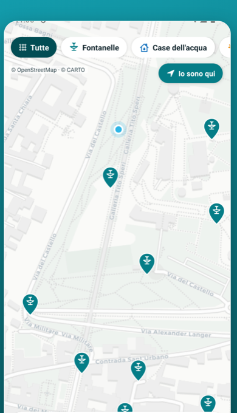

L'acqua buona è qui.
Sempre.
BeviQui ti mostra sulla mappa le fontanelle e le case dell'acqua più vicine a te. Riempi la borraccia gratis, ovunque sei. Meno plastica, più leggerezza.
Gratis e senza registrazione · oltre 12.000 fontanelle già sulla mappa in Lombardia.

Quante bottigliette hai comprato solo perché avevi sete?
Sei in giro, hai sete, e finisci per pagare l'ennesima bottiglietta di plastica. Eppure l'acqua buona è proprio lì, gratis, a due passi da te. Solo che non sai dove. BeviQui te lo dice.
Come funziona
Bastano 3 passi. Niente account, niente complicazioni.
Apri la mappa
Vedi all'istante tutte le fontanelle e le case dell'acqua intorno a te.
Scegli la più vicina
Attiva il GPS e raggiungila con le indicazioni stradali.
Riempi e bevi
Acqua pubblica, buona e gratuita. Riparti più leggero.
Più di un'app. Un modo nuovo di stare in giro.
Meno plastica
Ogni borraccia riempita è una bottiglietta in meno nell'ambiente.
Più leggeri
Esci senza portarti dietro l'acqua: la trovi quando ti serve.
Sempre tranquillo
Cammini, corri, giri con i bambini o sei turista: l'acqua buona la trovi sempre.
Un bene di tutti
L'acqua pubblica è di tutti noi. BeviQui ce lo ricorda, una fontanella alla volta.
Provala adesso. È gratis.
BeviQui sta arrivando su iPhone e Android, ora in beta. Inquadra il QR con la fotocamera del telefono e inizia subito a trovare l'acqua intorno a te.
Nessuna registrazione obbligatoria. Apri e usi tutto.
 Inquadra per provare
Inquadra per provare
La mappa cresce con te
Conosci una fontanella che non c'è ancora? Aggiungila con una "Scoperta BeviQui" e falla esistere per tutti. Segnala se funziona, se è chiusa o se ha bisogno di una mano. Insieme teniamo viva la mappa dell'acqua pubblica d'Italia.
BeviQui è gratis. E vogliamo che resti così.
Niente pubblicità invadenti, non vendiamo i tuoi dati, nessun abbonamento. È un progetto indipendente, nato in Italia per amore dell'acqua pubblica. Se credi che l'acqua buona debba essere di tutti, dacci una mano a portarla in ogni città.
Sostenerci non costa per forza un euro:
Vuoi essere tra i primi?
Lasciaci la tua email: ti avvisiamo appena BeviQui è disponibile nella tua zona, con le nuove fontanelle vicino a te. Niente spam, solo acqua buona.
Rispettiamo la tua privacy. Ti scriviamo solo quando conta.
Domande veloci
È davvero gratis?
Sì, al 100%. Nessun costo nascosto.
Devo registrarmi?
No. Apri e usi tutto subito. Ti chiediamo il nome solo dopo il tuo primo contributo, per ringraziarti.
L'acqua delle fontanelle è sicura?
Sono punti di acqua potabile pubblica gestiti dagli enti locali. Dove serve, la community segnala lo stato.
Funziona nella mia città?
Partiamo dalla Lombardia, dove ci sono già oltre 12.000 fontanelle sulla mappa, e cresciamo ogni settimana in tutta Italia. Iscriviti alla lista e ti avvisiamo quando arriviamo da te.
Da dove arrivano i dati?
Dalle mappe pubbliche di OpenStreetMap e dai contributi della community.
L'acqua buona è qui. Inizia adesso.
Trova la fontanella. Riempi la borraccia. Bevi. Riparti più leggero.
Provala gratis